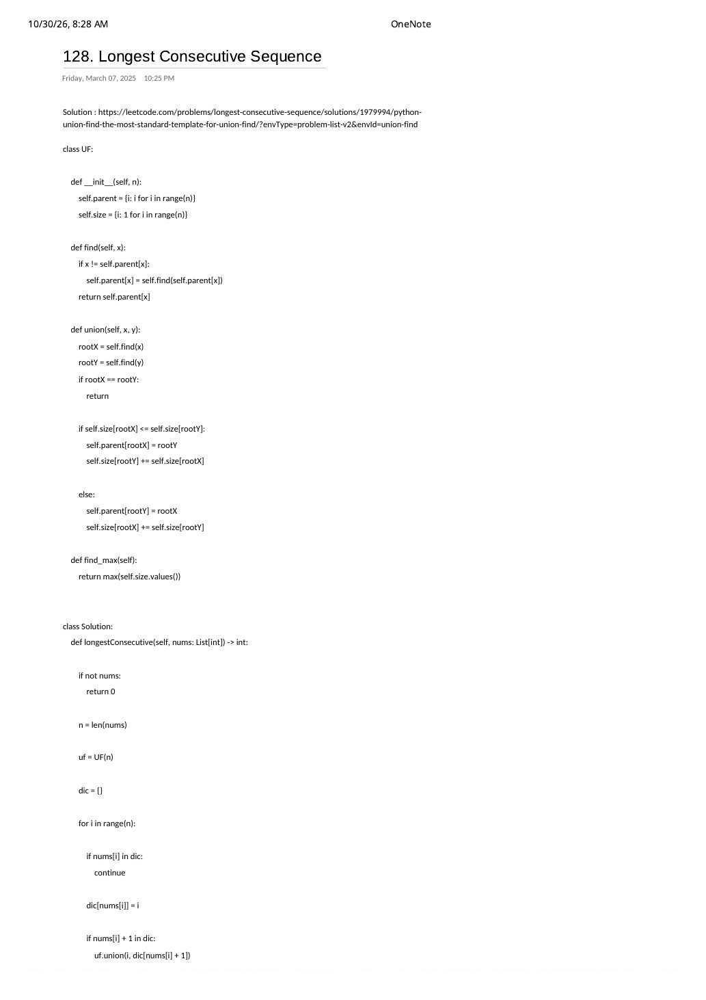

LC 128: Longest Consecutive Sequence (Part II) — Index-Mapped UF(n) Template, Duplicate Trap & Hash-Set Contrast
Expanded from competitive coding study note: 10_128_Longest_Consecutive_Sequence.pdf (Pages 1–2, dated March 7, 2025) · Revisits Note 04 with a decoupled 0..n-1 Union-Find engine · View original note pages
1. Why Two Notes on LC 128? Decoupling Domain Keys from the UF(n) Engine
Nearly eleven months after drafting the value-keyed merge plan in Note 04 (04_128, April 2024), this March 2025 note (10_128) captures a crucial architectural upgrade used across competitive programming:
The Coordinate / Index-Mapping Pattern (val → idx)
Instead of rewriting custom hash-map parent and size tables whenever problem keys are arbitrary integers ($[-10^9, 10^9]$), strings, or emails, keep your UF(n) class strictly $0$-indexed over $0 \dots n - 1$ and translate domain values via a single external dictionary dic[val] = i!
- Inside
UF(n):find(x)andunion(x, y)touch only compact integer indices $0 \dots n - 1$ (zero hashing during path compression!). - Outside
UF(n):dicmaps each unique value $\text{nums}[i]$ to the first array index $i$ where it appeared.
2. The Subtle Duplicate-Element Trap: Why if (dic.count(nums[i])) continue; Is Mandatory
Suppose nums = [1, 2, 0, 1] (expected answer: 3 for [0, 1, 2]). Look at what goes catastrophically wrong if you omit if (dic.count(nums[i])) continue; when mapping values to array indices:
Bug Trace Without the Duplicate Guard on nums = [1, 2, 0, 1]
i = 0 (val = 1):dic[1] = 0,size = [1, 1, 1, 1].i = 1 (val = 2):dic[2] = 1;2 - 1 = 1indic$\implies$union(1, 0)$\to$ block{idx 0, idx 1}hassize = 2.i = 2 (val = 0):dic[0] = 2;0 + 1 = 1indic$\implies$union(2, 0)$\to$ block{idx 0, idx 1, idx 2}hassize = 3.i = 3 (val = 1, duplicate!): If we don'tcontinue, fresh index3(withsize[3] = 1!) unions withdic[2] = 1(root of size 3), inflating the component size to3 + 1 = 4(WRONG!) because index0and index3represent the same integer1!
Guarding if (dic.count(nums[i])) continue; ensures every distinct integer claims at most one DSU vertex, preserving a 1-to-1 bijection between component size and consecutive sequence length.
10_128: Duplicate index 3 remains an untouched singleton of size $1$, while unique indices {0, 1, 2} unite cleanly to size $3 = \max(\text{uf.size})$.3. Hash-Set Streak Start vs. Index-Mapped Union-Find
In interviews, LC 128 is famously solved in 10 lines with a HashSet, whereas on Union-Find problem lists it serves as the canonical benchmark for size-tracking DSU. When should you pick each?
| Dimension | Hash-Set Streak Start | Index-Mapped UF(n) (10_128) |
|---|---|---|
| Core Trick | Start counting $x, x+1, x+2, \dots$ only when $x - 1 \notin \text{set}$ | Map unique $x \mapsto i$, union $i$ with $\text{dic}[x \pm 1]$, track size[root] |
| Static Array Time | $\mathcal{O}(n)$ (lower constant factor, 1 hash set) | $\mathcal{O}(n \cdot \alpha(n))$ (1 hash map + $2n$ ints) |
| Online Streaming Updates | $\mathcal{O}(n)$ per query worst-case if streaks grow incrementally | $\mathcal{O}(\alpha(n)) \approx \mathcal{O}(1)$ per insertion and per max query! |
For completeness, here is the 10-line static unordered_set streak-start reference in C++ alongside our DSU implementation:
// Static Offline Reference: O(n) Hash-Set Streak-Start
int longestConsecutiveHashSet(const vector<int>& nums) {
unordered_set<int> numSet(nums.begin(), nums.end());
int best = 0;
for (int x : numSet) {
if (x == INT_MIN || !numSet.count(x - 1)) { // Only walk forward from LEFT endpoint!
long long y = static_cast<long long>(x) + 1;
while (y <= INT_MAX && numSet.count(static_cast<int>(y))) {
++y;
}
best = max(best, static_cast<int>(y - x));
}
}
return best;
}4. Clean C++ Index-Mapped DSU Implementation
Notice one micro-optimization over the raw note in 10_128: the original note mapped dense indices $\{0 \dots n - 1\}$ inside hash-table structures for parent and size. Because dic[val] = i already compresses arbitrary integers onto the dense range $0 \dots n - 1$, backing UF(n) with contiguous C++ vectors vector<int> parent(n), sz(n, 1) instead of unordered_map<int, int> avoids per-node hashing and bucket allocations inside find and unite, cutting memory and lookup overhead by ~3×!
#include <bits/stdc++.h>
using namespace std;
struct UF {
vector<int> parent, sz;
int maxSz = 1;
explicit UF(int n) : parent(n), sz(n, 1) {
iota(parent.begin(), parent.end(), 0);
}
int find(int x) {
return parent[x] == x ? x : parent[x] = find(parent[x]);
}
void unite(int x, int y) {
int rx = find(x), ry = find(y);
if (rx == ry) return;
if (sz[rx] < sz[ry]) swap(rx, ry);
parent[ry] = rx;
sz[rx] += sz[ry];
maxSz = max(maxSz, sz[rx]);
}
};
class Solution {
public:
int longestConsecutive(vector<int>& nums) {
int n = nums.size();
if (n == 0) return 0;
UF uf(n);
unordered_map<int, int> dic;
dic.reserve(n * 2);
for (int i = 0; i < n; ++i) {
int val = nums[i];
if (dic.count(val)) continue; // Essential duplicate guard!
dic[val] = i;
if (val < INT_MAX) {
auto it = dic.find(val + 1);
if (it != dic.end()) uf.unite(i, it->second);
}
if (val > INT_MIN) {
auto it = dic.find(val - 1);
if (it != dic.end()) uf.unite(i, it->second);
}
}
return uf.maxSz;
}
};5. Complexity Proof & Key Edge Cases
- Time Complexity — $\mathcal{O}(n \cdot \alpha(n))$ expected: One pass over $n$ items with $\mathcal{O}(1)$ average
dicprobes and amortized $\mathcal{O}(\alpha(n))$ array-backedUFoperations. - Space Complexity — $\mathcal{O}(n)$: $2n$ ints in
UFplus up to $n$ entries indic. - Key Edge Cases:
nums = {}(empty vector): Withoutif (n == 0) return 0;, returninguf.maxSz(initialized to1) or dereferencing*max_element(sz.begin(), sz.end())on an empty vector fails!- All identical numbers
nums = {5, 5, 5}: Index0insertsdic[5] = 0; indices1, 2hitcontinue;uf.maxSzreturns1.
From the Handwritten Notes
View original note page 1 — 10_128_Longest_Consecutive_Sequence.pdf (Reusable Python UF class & dic duplicate check)


10_128_Longest_Consecutive_Sequence.pdf Page 1 (March 7, 2025): Standard Union-By-Size UF class with find_max() and if nums[i] in dic: continue.